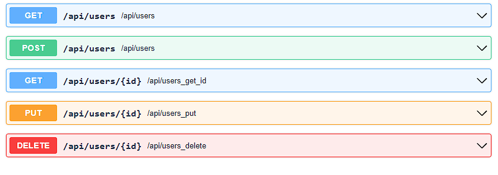
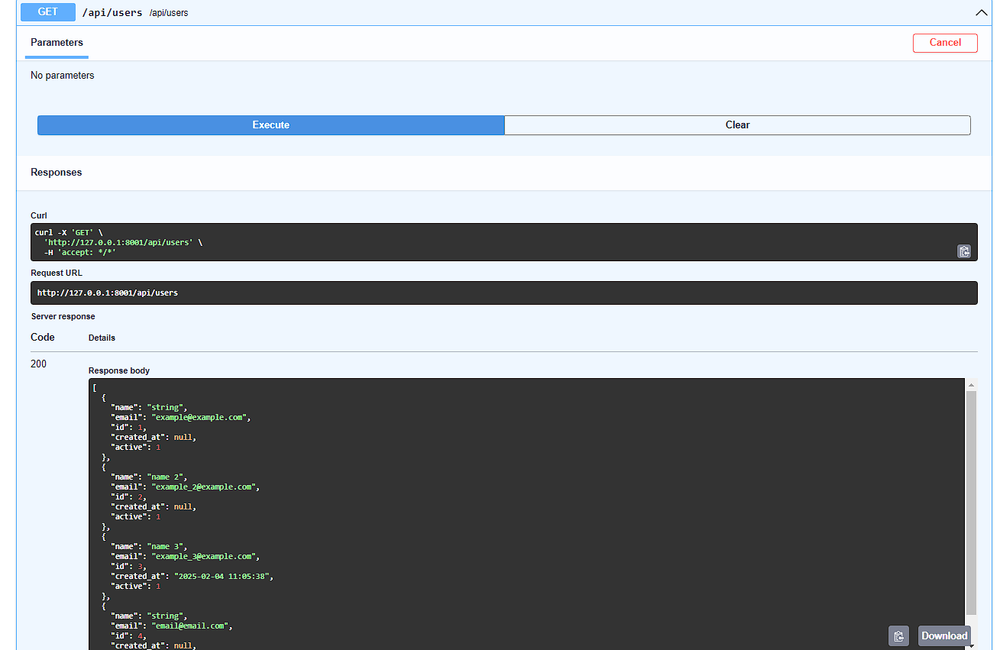
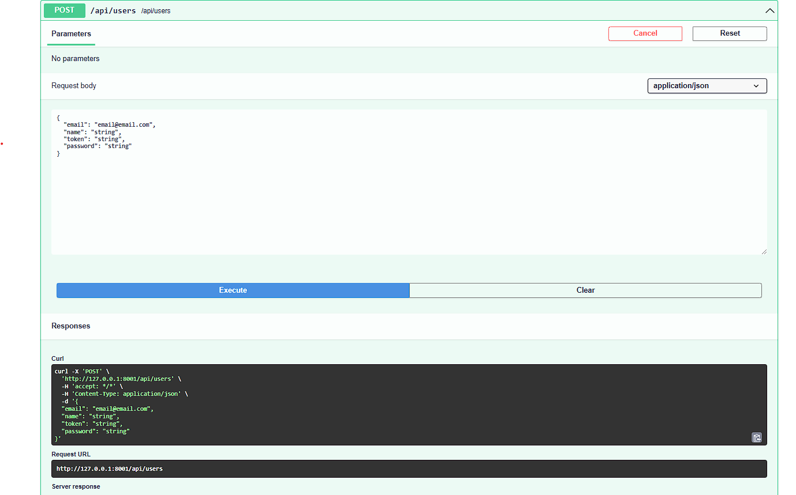
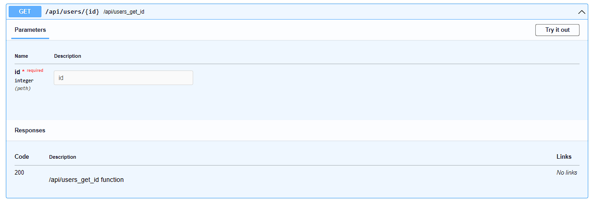
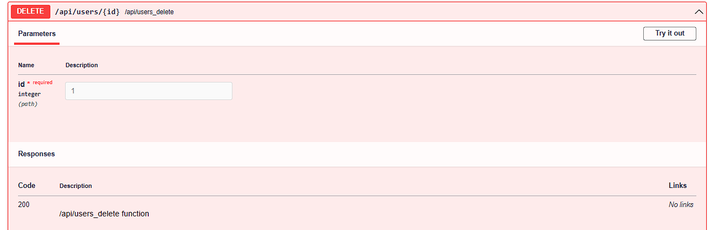
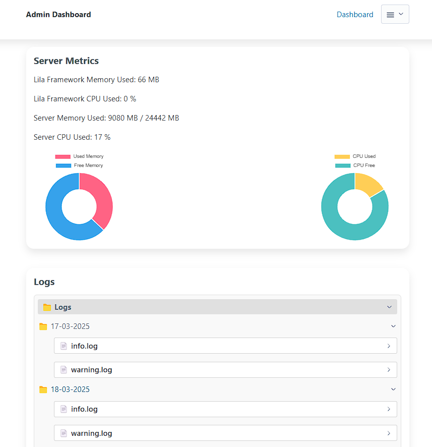
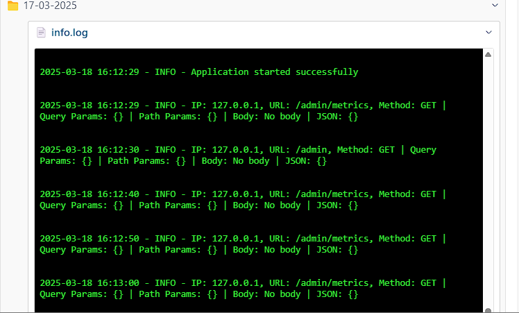

from core.app import App
from app.routes.routes import routes
from app.routes.api import routes as api_routes
from core.middleware import Middleware
from app.config import PORT, HOST, DEBUG
from app.middlewares.defaults import (
LoggingMiddleware,
IPBlockingMiddleware,
URLBlockingMiddleware,
MaliciousExtensionMiddleware,
SensitivePathMiddleware,
ErrorHandlerMiddleware,
)
import itertools
import uvicorn
import asyncio
# English: Combining application and API routes into a single list.
# Español: Combinando las rutas de la aplicación y la API en una única lista.
all_routes = list(itertools.chain(routes, api_routes))
# English: Here we activate the admin panel with default settings.
# Español: Aquí activamos el panel de administrador con configuraciones predeterminadas.
# from app.routes.admin import Admin
# from app.models.user import User
# admin_routes=Admin(models=[User])
# all_routes = list(itertools.chain(routes, api_routes,admin_routes))
# English: Marker for the admin routes in main.py.
# Español: Marcador para las rutas de administrador en main.py.
# admin_marker
cors = None
# English: CORS usage example
# Español : Ejemplo de utilización de CORS
# cors={
# "origin": ["*"],
# "allow_credentials" : True,
# "allow_methods":["*"],
# "allow_headers": ["*"]
# }
# app = App(debug=True, routes=all_routes,cors=cors)
# English:necessary for cli command modify react cors for development
# Español:necesario para el comando cli modificar cors de react para desarrollo
# react_marker
middlewares = [
Middleware(LoggingMiddleware),
Middleware(IPBlockingMiddleware),
Middleware(URLBlockingMiddleware),
Middleware(MaliciousExtensionMiddleware),
Middleware(SensitivePathMiddleware),
Middleware(ErrorHandlerMiddleware),
]
# English: Initializing the application with debugging enabled and the combined routes.
# Español: Inicializando la aplicación con la depuración activada y las rutas combinadas.
app = App(debug=DEBUG, routes=all_routes, cors=cors, middleware=middlewares)
# English: To ensure SEO (bots, AI), caching, and HTML hydration, uncomment these lines.
# Adding {% include "react/cache/index.html" %} to
# Español :Para tener seo (bots,ia) ,cache y que react hidrate el html ,descomenta estas lineas.
# Agregadando en
, {% include "react/cache/index.html" %}
# import subprocess
# import sys
# @app.on_event("startup")
# async def startup_event():
# print("♻️ Prerender for react...")
# url_with_port =f" http://{HOST}:{PORT}"
# subprocess.Popen([
# sys.executable,
# "-m",
# "cli.prerender",
# "--url",
# url_with_port.strip()
# ])
# English: Asynchronous main function to run the application server.
# Español: Función principal asíncrona para ejecutar el servidor de la aplicación.
async def main():
# English: Starting the Uvicorn server with the application instance.
# Español: Iniciando el servidor Uvicorn con la instancia de la aplicación.
uvicorn.run("main:app", host=HOST, port=PORT, reload=True)
# English: Entry point for the script, running the main asynchronous function.
# Español: Punto de entrada del script, ejecutando la función principal asíncrona.
if __name__ == "__main__":
try:
asyncio.run(main())
except KeyboardInterrupt:
# English: Gracefully shutting down the application on keyboard interrupt.
# Español: Apagando la aplicación de manera ordenada al interrumpir con el teclado.
print("Shutting down the application...")
pass
Routes
Routes are the access points to the application. In Lila, routes are defined in the
routes directory (by default, but you can place them wherever you want) and
imported into
main.py for use. Routes can be configured to handle HTTP requests, API
methods, and
more.
In addition to JSONResponse you can use HTMLResponse,
RedirectResponse and PlainTextResponse, or
StreamingResponse , to transmit data in real-time (useful for
streaming video/audio or large responses).
Below is an example of how routes are defined in Lila:
#Import from core JSONResponse .
from lila.core.responses import JSONResponse
# Manages routes for API endpoints.
from lila.core.routing import Router
# Initializes the router instance to handle API app.routes.
router = Router()
# Defines a simple API route that supports the GET method.
@router.route(path='/api', methods=['GET'])
async def api(request: Request):
"""Api function"""
# English: Returns a simple JSON response for API verification.
return JSONResponse({'api': True})
Get url parameteres
In this function, we receive a parameter via
the URL using {param}.
If the parameter is not provided,
it defaults to 'default'.
The response is a JSON containing the received value.
@router.route(path='/url_with_param/{param}', methods=['GET'])
async def param(request: Request):
param = request.path_params.get('param', 'default')
return JSONResponse({"received_param": param})
Or you canl also do it like this
@router.route(path='/url_with_param/?query_param', methods=['GET','POST'])
async def query_param(request: Request):
query_param= request.query_params.get('query_param', 'query_param')
return JSONResponse({"received_param": query_params})
from lila.core.responses import JSONResponse # Simplifies sending JSON responses.
from lila.core.routing import Router # Manages API app.routes.
from lila.core.request import Request # Handles HTTP requests in the application.
from pydantic import EmailStr, BaseModel # Validates and parses data models for input validation.
from app.helpers.helpers import get_user_by_id_and_token
from app.middlewares.middlewares import validate_token
router = Router()
Middleware and Decorators Usage
Middlewares allow intercepting requests before they reach the main logic of the API.
In this example, we use @validate_token to validate a JWT token in the
request
header.
@router.route(path='/api/token', methods=['GET','POST'])
@validate_token # Middleware to validate JWT token.
async def api_token(request: Request):
return JSONResponse({'api': True})
Data Validation with Pydantic
Pydantic allows defining data models that automatically validate user input.
Additionally, specifying a model in the route generates automatic documentation in
/docs.
from pydantic import EmailStr, BaseModel
class ExampleModel(BaseModel):
email: EmailStr # Ensures a valid email.
password: str # String for password.
@router.route(path='/api/example', methods=['POST'], model=ExampleModel)
async def login(request: Request):
body = await request.json()
try:
input = ExampleModel(**body) # Automatic validation with Pydantic.
except Exception as e:
return JSONResponse({"success": False, "msg": f"Invalid JSON Body: {e}"}, status_code=400)
return JSONResponse({"email": input.email, "password": input.password})
Automatic Documentation Generation
Thanks to the integration with Pydantic, the API documentation is generated automatically
and is
accessible from
/docs. You can also generate an OpenAPI JSON file for external tools.
router.swagger_ui() # Enables Swagger UI for API documentation.
router.openapi_json() # Generates OpenAPI JSON for external tools.
Importing Routes in main.py
To use the routes defined in the router, you need to obtain them with
router.get_routes() and import them into main.py.
routes = router.get_routes() # Retrieves all defined app.routes.
Static files
To load static files(js,css,etc) you can use the mount() method.
What will be received as parameters that trade by default
path: str = '/public', directory: str = 'static', name: str = 'static'
from lila.core.routing import Router
# Creating an instance of the Router to define the routes, if it was not previously created in the file
router = Router()
# Mounting the static files in the 'static' folder, url ='/public' by default
router.mount()
Templates Render (Jinja2 + Lila JS)
In Lila, you can use Jinja2 to render HTML with server-side data or Lila JS
to create reactive client-side components,
or even combine both approaches according to your needs.
Rendering Options
Lila offers three approaches to build your application:
1. Traditional Jinja2
Full server-side rendering using Jinja2 templates with context data.
<p>{{ translate['Welcome'] }} {{ user.name }}</p>
Advantages: Perfect SEO, fast initial load, simple.
2. Lila JS (SPA)
Fully reactive single-page application on the client side.
<span data-bind="message"></span>
<input data-model="username">
Advantages: Fluid user experience, no page reloads.
3. Hybrid Approach
Combine Jinja2 for base structure and Lila JS for interactive parts.
<div data-component="InteractivePart"></div>
<p>{{ static_content }}</p>
Advantages: The best of both worlds.
Render with Jinja2
In Lila, Jinja2 is used by default to render HTML templates and send them to the
client.
With context, you can pass information such as translations, data,
values, lists, dictionaries or whatever you need.
The parameters that the render function from
lila.core.templates
can receive are:
request: Request,
template: str,
context: dict = {},
theme_: bool = True,
translate: bool = True,
files_translate: list = []
Lila JS: Reactive System
Lila JS is a minimalist library to create reactive interfaces with vanilla
JavaScript.
Documentation
Key Concepts
Reactive State
State is a special object that automatically updates the UI when it changes.
state: () => ({
email: '',
password: ''
})
Two-Way Data Binding
Bidirectional binding between inputs and state using data-model.
<input data-model="email">
<span data-bind="email"></span>
Components
Reusable units with their own state, template and actions.
App.createComponent('Login', {
template: 'login-template',
state: () => ({...}),
actions: {...}
});
Routing
Client-side navigation between components.
App.addRoute('/login', 'Login');
handleRouting();
Complete Example: Authentication System
This example shows how to combine Jinja2 for the base structure and Lila JS for
interactivity.
auth.html - Base Structure
<!DOCTYPE html>
<html lang="{{lang}}">
<head>
<meta charset="UTF-8">
<title>{{title}}</title>
<link rel="stylesheet" href="/public/css/styles.css" />
<script src="/public/js/lila.js"></script>
</head>
<body>
<main id="app-lila" class="container"></main>
{% include 'auth/login.html' with context %}
{% include 'auth/register.html' with context %}
{% include 'auth/footer.html' with context %}
<script>
handleRouting();
</script>
</body>
</html>
Explanation: This file serves as the base layout using Jinja2. It
includes:
- Translations from context with
{{lang}} and {{title}}
- A main container
app-lila where components will be mounted
- Inclusion of partial templates for login, register and footer
- Router initialization with
handleRouting()
login.html - Reactive Component
<template data-template="login-template">
<div class="flex center">
<article class="shadow rounded mx-m">
<h1 class="flex center">{{translate['login']}}</h1>
<form data-action="loginFetch">
<div class="input-icon">
<i class="icon-email"></i>
<input type="email" data-model="email" placeholder="Email" required />
</div>
<div class="input-icon">
<i class="icon-lock"></i>
<input type="password" data-model="password"
placeholder="{{translate['password']}}" required />
</div>
<button type="submit">{{translate['login']}}</button>
</form>
<a href="/register" data-link>{{translate['register']}}</a>
</article>
</div>
<div data-component="Footer"></div>
</template>
<script>
App.createComponent('Login', {
template: 'login-template',
state: () => ({
email: '',
password: ''
}),
actions: {
loginFetch: async ({ state, event }) => {
event.preventDefault();
const data = { email: state.email, password: state.password };
alert('Login: ' + JSON.stringify(data));
}
}
});
App.addRoute('/login', 'Login');
App.addRoute('*', 'Login'); // Default route
</script>
Key Features:
- Two-way data binding: Inputs with
data-model
automatically sync with state.
- Actions:
data-action binds the form to the
loginFetch method.
- Nested component: Footer is included with
data-component="Footer".
- Routing: Links with
data-link navigate without
page reload.
- Combination with Jinja2: Use of
{{translate}} for
internationalized texts.
register.html - Component with Validation
<template data-template="register-template">
<div class="flex center container">
<article class="shadow rounded mx-m">
<h1>{{translate['register']}}</h1>
<form data-action="registerFetch">
<input type="text" data-model="name" placeholder="{{translate['name']}}">
<input type="email" data-model="email" placeholder="Email">
<input type="password" data-model="password" placeholder="{{translate['password']}}">
<input type="password" data-model="password_2" placeholder="{{translate['confirm_password']}}">
<button type="submit">{{translate['register']}}</button>
</form>
<div>
<p>Current values:</p>
<p>Name: <span data-bind="name"></span></p>
<p>Email: <span data-bind="email"></span></p>
</div>
<a href="/login" data-link>{{translate['login']}}</a>
</article>
</div>
</template>
<script>
App.createComponent('Register', {
template: 'register-template',
state: () => ({
name: '',
email: '',
password: '',
password_2: ''
}),
actions: {
registerFetch: async ({ state, event }) => {
event.preventDefault();
if (state.password !== state.password_2) {
alert("{{translate['passwords_dont_match']}}");
return;
}
const data = {
name: state.name,
email: state.email,
password: state.password
};
// Send data to server...
}
}
});
App.addRoute('/register', 'Register');
</script>
Key Points:
- Shows real-time state values with
data-bind
- Basic validation directly in the action
- Combined use of reactive data and static translations
footer.html - Simple Component
<template data-template="footer-template">
<footer class="mt-4 container">
<div class="flex between">
<a href="/set-language/es">Español</a>
<a href="/set-language/en">English</a>
</div>
</footer>
</template>
<script>
App.createComponent('Footer', {
template: 'footer-template'
});
</script>
Notes:
- Stateless component
- Reusable in any part of the application
- Doesn't require complex JavaScript logic
Advantages of This Approach
🚀 Performance
Combines Jinja2's initial speed with SPA fluidity.
🔍 Optimized SEO
Critical content is server-rendered for search engine bots.
💡 Progressive
Start with Jinja2 and add interactivity where needed.
🛠️ Simple
No complex configuration or heavy dependencies.
Lila JS Quick Reference
| Attribute/Function |
Description |
Example |
data-component |
Mounts a component inside another |
<div data-component="Footer"></div> |
data-bind |
Displays a state property value |
<span data-bind="email"></span> |
data-model |
Two-way binding for inputs |
<input data-model="username"> |
data-action |
Binds an action to an event |
<button data-action="submit"> |
data-link |
Navigation between routes without reload |
<a href="/about" data-link> |
App.createComponent |
Creates a new component |
App.createComponent('Login', {...}); |
App.addRoute |
Defines a route for a component |
App.addRoute('/login', 'Login'); |
handleRouting() |
Initializes the routing system |
<script>handleRouting();</script> |
React Integration with Lila
Lila provides a seamless integration with React, allowing you to develop your frontend
with a
modified Vite + React setup while keeping strong SEO capabilities, caching, and HTML
hydration.
This setup ensures your React app can be prerendered and recognized by Google Bots and
AI.
Starting a React Project in Lila
To create or run a React project inside Lila, execute the following command:
# For Python 3 environments
python3 -m cli.react [--name PROJECT_NAME]
# Or if your default Python is python
python -m cli.react [--name PROJECT_NAME]
Parameters:
--name: Optional project name, default is "react".
Development CORS Configuration
When running React in development mode, Lila automatically edits main.py to
add the
necessary CORS configuration. By default:
# English: for development react
# Español: para desarrollo react
cors = {
"origin": ["http://localhost:5173"],
"allow_credentials": True,
"allow_methods": ["*"],
"allow_headers": ["*"]
}
Automatic Routes and Asset Mounting
Lila modifies app/routes/routes.py automatically for your React build. This
ensures
the React build assets are served correctly and the index.html is rendered from the
cache.
router.mount(path="/assets", directory="templates/html/react/assets", name="react-assets")
@router.route(path="/{path:path}", methods=["GET"])
async def home(request: Request):
response = render(request=request, template="react/index")
return response
Remember to modify the main.py file when passing your routes
to initialize
the application, always pass api_routes first, or whatever you have
named it.
This is key to getting your API routes without colliding with the general React route.
@router.route(path="/{path:path}", methods=["GET"])
, where React, with React Router, or whatever you use, can handle all the routes.
Remaining this way in main.py
all_routes = list(itertools.chain( api_routes,routes))
#First api_routes, then routes (where the general React route is)
Prerendering and Caching
To improve SEO, Lila supports prerendering your React pages and caching them. After
building your
React app with npm run build, you can generate the cached HTML:
python -m cli.prerender --url http://localhost:8001
# or python3 -m cli.prerender
Then, in your react/index.html dev file, include the cached HTML for SEO
hydration:
{% include "react/cache/index.html" ignore missing %}
Startup Integration in main.py
You can optionally execute the prerender automatically on server startup by uncommenting
the
following section in main.py:
# import subprocess
# import sys
# @app.on_event("startup")
# async def startup_event():
# print("♻️ Prerender for react...")
# url_with_port = f"http://{HOST}:{PORT}"
# subprocess.Popen([
# sys.executable,
# "-m",
# "cli.prerender",
# "--url",
# url_with_port.strip()
# ])
SEO and Hydration
By including the cached HTML in the root div, React will rehydrate the
content on the
client side. This gives you:
- Strong SEO recognition by Google Bots and AI.
- Faster first paint with pre-rendered HTML.
- Optional daily caching using a scheduled prerender task.
React Helpers and Context
You can pass context from Jinja2 templates to React using <script>
tags in
templates/html/react/index.html. Useful for translations, configuration, or
any
dynamic data.
Automatic API Documentation
Lila continues to generate API documentation automatically using Pydantic models. All
helpers
and middlewares can be combined seamlessly with React routes.
Session Validation with React
In the backend, you can add a middleware to validate the session. You can also use JWT, but Session is more secure because it is signed by itsdangerous.
This way, you can validate requests and store public IDs, tokens, etc., to validate sessions, or you can use JWT or both.
The main recommendation is to validate the session this way or with login_required, which is another middleware that can also be configured there.
This way, Lila and React are connected for the developer. In production, thanks to the if DEBUG condition, it will be secure with the signature of itsdangerous in the Session class.
from app.middlewares.middlewares import login_required_auth, check_token, check_session
from lila.core.session import Session
from app.config import DEBUG
# Define a simple API route that supports GET method.
@router.route(path="/api", methods=["GET"])
async def api(request: Request):
"""Api function"""
# Returns a simple JSON response for API verification.
response = JSONResponse({"api": True})
new_val={"id":20}
samesite="none" if DEBUG else "secure"
Session.setSession(new_val=new_val,name_cookie='auth',response=response,samesite=samesite)
return response
# Define an API route that supports GET and POST methods.
@router.route(path="/api/token", methods=["GET", "POST"])
# Middleware to validate the JWT Token.
@login_required_auth
async def api_token(request: Request):
"""Api Token function"""
print(Session.getSessionValue(request=request))
return JSONResponse({"api": True})
def login_required_auth(func, key: str = "auth"):
@wraps(func)
async def wrapper(request, *args, **kwargs):
session_data = Session.getSession(request=request,key=key)
if not session_data:
return JSONResponse({"session": False, "success": False}, status_code=401)
return await func(request, *args, **kwargs)
import { useEffect } from 'react';
function MyComponent() {
useEffect(() => {
const start = async () => {
const resp = await fetch('http://127.0.0.1:8000/api', { credentials: 'include' });
const resp_ = await fetch('http://127.0.0.1:8000/api/token', { credentials: 'include' });
const json = await resp_.json();
console.log(json);
};
start();
}, []);
return (
<div>
{/* Your component JSX */}
</div>
);
}
Lila JS Documentation
Lila JS is a minimalist JavaScript micro-framework for building modern web applications.
It provides a reactive system, routing, and components in a lightweight package.
Core Concepts
Components
Components are the building blocks of a Lila JS application. They encapsulate a
template, state, and actions.
App.createComponent('Home', {
template: 'home-template',
state: () => ({
message: 'Welcome to Lila JS!'
}),
actions: {
updateMessage: ({ state }) => {
state.message = 'The message has been updated!';
}
}
});
Routing
Lila JS includes a simple router to map URLs to components.
App.addRoute('/', 'Home');
App.addRoute('/about', 'About');
Initialization
To start the application and handle routing, you need to call `handleRouting()`.
API Reference & Examples
Login Form Example
This example demonstrates how to create a simple login form with validation.
<template data-template="login-template">
<form data-action="login">
<input type="email" data-model="email" placeholder="Email" required>
<input type="password" data-model="password" placeholder="Password" required>
<button type="submit">Login</button>
</form>
</template>
<script>
App.createComponent('Login', {
template: 'login-template',
state: () => ({
email: '',
password: ''
}),
actions: {
login: ({ state, event }) => {
event.preventDefault();
if (state.email && state.password) {
// Perform login logic here
console.log('Logging in with:', state.email, state.password);
} else {
alert('Please fill in all fields.');
}
}
}
});
App.addRoute('/login', 'Login');
</script>
File Upload Helper
The upload helper provides a complete solution for handling file
uploads in your application,
including validation, security checks, and translation support.
This helper automatically handles:
- HTTP method validation (POST only)
- Content-Type validation (multipart/form-data)
- File extension validation
- File size limits
- Empty file detection
- Secure filename handling
- Automatic directory creation
- Translation support for error messages
Parameters
The upload function accepts these parameters:
request: Request # Starlette request object
name_file: str | list # Field name for file upload (default: 'file')
UPLOAD_DIR: str # Directory to save files (default: 'uploads')
ALLOWED_EXTENSIONS: set # Allowed file extensions (default: {'txt', 'pdf', 'png', 'jpg', 'jpeg', 'gif'})
MAX_FILE_SIZE: int # Maximum file size in bytes (default: 10MB)
Usage Example
from app.helpers.helpers import upload
@router.route("/upload", methods=["POST"])
async def uploadFile(request: Request):
response = await upload(request=request, name_file="file")
return response
Frontend Implementation
<form onsubmit="upload(event);">
<fieldset>
<input type="file" name="file" required>
</fieldset>
<button type="submit">
<i class="icon-check-circle"></i>
Upload Files
</button>
</form>
<script>
async function upload(event) {
event.preventDefault();
const formElement = event.target;
const formData = new FormData(formElement);
try {
const response = await fetch('/upload', {
method: 'POST',
body: formData,
});
const result = await response.json();
if (!response.ok) throw new Error(result.message);
alert('File uploaded successfully!');
} catch (error) {
alert(error.message);
}
}
</script>
Response Format
The helper returns a JSONResponse with this structure:
{
"file": "/uploads/filename.ext",
"success": true,
"message": "File uploaded successfully"
}
{
"error": true,
"success": false,
"message": "Error message in user's language"
}
Markdown /HTML
To render markdown files, the
renderMarkdown function is used, which receives the following parameters:
request,file : str , base_path:str ='templates/markdown/',css_files : list = [],js_files:list=[],picocss : bool =False
file is the name of the file, starting from the base_path of
the
directory
located in templates/markdown/, for example: index.md.
It will look for an index.md file in the markdown directory inside the
templates
folder
(templates/markdown/index.md).
css_files and js_files are lists of CSS and JS files that will
be
loaded in the
generated HTML file.
picocss is a boolean indicating whether the PicoCSS CSS file should be
loaded.
Below is an example of how markdown files are rendered in
Lilac:
from lila.core.templates import renderMarkdown
@router.route(path='/markdown', methods=['GET'])
async def home(request: Request):
#Define a list of CSS files to include in the response
css = ["/public/css/styles.css"]
#Renders a markdown file with PicoCSS styling
response = renderMarkdown(request=request, file='example', css_files=css, picocss=True)
return response
Internationalization (Translations)
Translations are used to internationalize an application and display content in different
languages. In Lila, translations are stored in the app/locales directory
and
can be dynamically loaded into the application.
Forcing Default Language in Routes
The render method accepts a lang_default parameter to force a
specific language for the rendered template:
# Force Spanish language
@router.route(path="/es", methods=["GET"])
async def home(request: Request):
response = render(
request=request,
template="index",
lang_default="es" # Forces Spanish translations
)
return response
# Force English language
@router.route(path="/en", methods=["GET"])
async def home(request: Request):
response = render(
request=request,
template="index",
lang_default="en" # Forces English translations
)
return response
Translation Files
To load a locale file, use the translate function from
app.helpers.helpers. You can access translations using:
translate - returns a dictionary with all translationstranslate_ - returns a specific translation (returns original text if
not found)
Example translation file (app/locales/translations.json):
{
"Send": {
"es": "Enviar",
"en": "Send"
},
"Cancel": {
"es": "Cancelar",
"en": "Cancel"
},
"Accept": {
"es": "Aceptar",
"en": "Accept"
},
"Email": {
"es": "Email",
"en": "Email"
},
"Name": {
"es": "Nombre",
"en": "Name"
},
"Back": {
"es": "Volver",
"en": "Back"
},
"Hi": {
"es": "Hola",
"en": "Hi"
}
}
Using Translations
Get a specific translation:
from app.helpers.helpers import translate_
msg_error_login = translate_(
key="Incorrect email or password",
request=request,
file_name="guest"
)
Get all translations from a file:
from app.helpers.helpers import translate
all_translations = translate(
request=request,
file_name="guest"
)
Models (SQLAlchemy)
Models are used to define the structure of data in
the application.
SQLAlchemy as the default ORM
for
database management.
SQLAlchemy allows creating database models,
executing queries, and handling migrations
efficiently.
Using Models
The `Base` class, imported from `lila.core.database`, serves as the foundation for
all models .
Models inherit from `Base` to define database tables with SQLAlchemy.
Example: User Model
This example demonstrates how to create a `User` model using SQLAlchemy.
The model defines a `users` table with columns such as `id`, `name`, `email`, `password`,
`token`,
`active`, and `created_at`.
from sqlalchemy import Table,Column,Integer,String,TIMESTAMP
from lila.core.database import Base
from app.connections import connection
class User(Base):
__tablename__='users'
id = Column(Integer, primary_key=True,autoincrement=True)
name=Column( String(length=50), nullable=False)
email=Column( String(length=50), unique=True)
password=Column(String(length=150), nullable=False)
token=Column(String(length=150), nullable=False)
active=Column( Integer, nullable=False,default=1)
created_at=Column( TIMESTAMP)
#Example of how to use SQLAlchemy to make queries to the database
def get_all(select: str = "id,email,name", limit: int = 1000) -> list:
query = f"SELECT {select} FROM users WHERE active =1 LIMIT {limit}"
result = connection.query(query=query,return_rows=True)#Return rows
return result
#Example of how to use SQLAlchemy to make queries to the database
def get_by_id(id: int, select="id,email,name") -> dict:
query = f"SELECT {select} FROM users WHERE id = :id AND active = 1 LIMIT 1"
params = {"id": id}
row = connection.query(query=query, params=params,return_row=True)#Retrurn row
return row
#Example using ORM abstraction in SQLAlchemy
@classmethod
def get_all_orm(cls, db: Session, limit: int = 1000):
result = db.query(cls).filter(cls.active == 1).limit(limit).all()
return result
#Example of how to use the class to make queries to the database
users = User.get_all()
user = User.get_by_id(1)
For details on SQLAlchemy, visit the official documentation:
SQLAlchemy Documentation.
Middlewares
Middleware functions are used to intercept requests before they reach the main logic of
the application.
In Lila, middlewares are defined in the app/middlewares directory (can be
modified to any file and/or directory).
Middlewares can be used for tasks such as authentication, logging, and error handling.
By default, Lila comes with 3 middlewares to start any application. Middlewares can be
used with decorators @my_middleware.
login_required, to validate that you have a signed session, for the 'auth'
key that is passed as a parameter to be able to modify it as you wish.
If this session is not found, it redirects to the URL that is passed as a parameter, by
default, it is "/login".
Otherwise, it will continue its course executing the route or function.
Then we have session_active, which is used to verify if you have an active
session.
It will redirect to the URL that is received as a parameter, by default, it is
"/dashboard".
The third is validate_token, which is used to validate a JWT token thanks
to the get_token helpers imported in
from app.helpers.helpers import get_token.
from lila.core.session import Session
from lila.core.responses import RedirectResponse,JSONResponse
from lila.core.request import Request
from functools import wraps
from app.helpers.helpers import get_token
def login_required(func,key:str='auth',url_return='/login'):
@wraps(func)
async def wrapper(request, *args, **kwargs):
session_data= Session.unsign(key=key,request=request)
if not session_data:
return RedirectResponse(url=url_return)
return await func(request,*args,**kwargs)
return wrapper
def session_active(func,key:str='auth',url_return:str ='/dashboard'):
@wraps(func)
async def wrapper(request,*args,**kwargs):
session_data= Session.unsign(key=key,request=request)
if session_data:
return RedirectResponse(url=url_return)
return await func(request,*args,**kwargs)
return wrapper
def validate_token(func):
@wraps(func)
async def wrapper(request: Request, *args, **kwargs):
await check_token(request=request)
return await func(request, *args, **kwargs)
return wrapper
async def check_token(request:Request):
token = request.headers.get('Authorization')
if not token:
return JSONResponse({'session':False,'message': 'Invalid token'},status_code=401)
token = get_token(token=token)
if isinstance(token,JSONResponse):
return token
Here we give you several examples of how to use all 3, with the decorators.
#Middleware to validate the JWT Token.
@router.route(path='/api/token', methods=['GET','POST'])
@validate_token #Middleware
async def api_token(request: Request):
"""Api Token function"""
print(get_user_by_id_and_token(request=request))
return JSONResponse({'api': True})
#Middleware to validate session active
@router.route(path='/dashboard', methods=['GET'])
@login_required #Middleware
async def dashboard(request: Request):
response = render(request=request, template='dashboard', files_translate=['authenticated'])
return response
#Middleware validate if user get session active (if user get session redirect '/dashboard')
@router.route(path='/login', methods=['GET'])
@session_active #Middleware
async def login(request: Request):
response = render(request=request, template='auth/login', files_translate=['guest'])
return response
Security Middleware
Lila Framework includes a built-in ErrorHandlerMiddleware that not only
handles unhandled exceptions but also provides robust security checks to protect your
application from malicious requests. This middleware is designed to block suspicious
IPs, URLs, and sensitive paths, ensuring that your application remains secure.
Features
-
IP Blocking:
Blocks IP addresses that have been flagged for malicious activity. IPs are blocked
for 6 hours by default.
-
URL Blocking:
Blocks specific URLs that are known to be malicious or suspicious.
-
Sensitive Paths Blocking:
Blocks access to sensitive paths such as
/etc/passwd,
.env, and others.
-
Malicious Extensions Blocking:
Blocks URLs containing malicious file extensions like
.php,
.asp, .jsp, and .aspx.
-
HTTP Detection:
Blocks requests containing
"http" in query parameters or body content.
Configuration
The middleware uses three JSON files located in the app/security directory:
blocked_ips.json: Stores blocked IPs with their expiration time.blocked_urls.json: Stores blocked URLs with their expiration time.sensitive_paths.json: Stores a list of sensitive paths to block.
If these files do not exist, they are automatically created and initialized with default
values:
[
"/etc/passwd",
".env",
"wp-content",
"docker/.env",
"owa/auth/logon.aspx",
"containers/json",
"models",
"autodiscover/autodiscover.json",
"heapdump",
"actuator/heapdump",
"cgi-bin/vitogate.cgi",
"CFIDE/wizards/common/utils.cfc",
"var/www/html/.env",
"home/user/.muttrc",
"usr/local/spool/mail/root",
"etc/postfix/master.cf"
]
Usage
The ErrorHandlerMiddleware is automatically applied to all requests. You
can customize its behavior by modifying the JSON files in the security
directory.
from starlette.middleware.base import BaseHTTPMiddleware
from lila.core.responses import JSONResponse, HTMLResponse
from lila.core.request import Request
from lila.core.logger import Logger
from datetime import datetime, timedelta
import json
import os
def load_blocked_data(file_path, default_value):
try:
if not os.path.exists(file_path):
with open(file_path, "w") as file:
json.dump(default_value, file, indent=4)
return default_value
with open(file_path, "r") as file:
content = file.read().strip()
if not content:
with open(file_path, "w") as file:
json.dump(default_value, file, indent=4)
return default_value
try:
return json.loads(content)
except json.JSONDecodeError:
with open(file_path, "w") as file:
json.dump(default_value, file, indent=4)
return default_value
except Exception as e:
Logger.error(f"Error loading {file_path}: {str(e)}")
return default_value
def save_blocked_data(file_path, data):
try:
with open(file_path, "w") as file:
json.dump(data, file, indent=4)
except Exception as e:
Logger.error(f"Error saving {file_path}: {str(e)}")
async def is_blocked(blocked_data, key, request: Request):
if key in blocked_data:
expiration_time = datetime.fromisoformat(blocked_data[key]["expiration_time"])
if datetime.now() < expiration_time:
req = await Logger.request(request=request)
Logger.warning(f"Blocked: {key} \n {req}")
return True
return False
class ErrorHandlerMiddleware(BaseHTTPMiddleware):
def __init__(
self,
app,
blocked_ips_file="security/blocked_ips.json",
blocked_urls_file="security/blocked_urls.json",
sensitive_paths_file="security/sensitive_paths.json",
):
super().__init__(app)
self.blocked_ips_file = blocked_ips_file
self.blocked_urls_file = blocked_urls_file
self.sensitive_paths_file = sensitive_paths_file
self.blocked_ips = load_blocked_data(blocked_ips_file, default_value={})
self.blocked_urls = load_blocked_data(blocked_urls_file, default_value={})
self.sensitive_paths = load_blocked_data(sensitive_paths_file, default_value=[])
async def dispatch(self, request, call_next):
try:
client_ip = request.client.host
url_path = request.url.path
query_params = str(request.query_params)
body = await request.body()
if await is_blocked(self.blocked_ips, client_ip, request=request):
return HTMLResponse(
content="Access Denied
Your IP has been temporarily blocked.
",
status_code=403,
)
if await is_blocked(self.blocked_urls, url_path, request=request):
return HTMLResponse(
content="Access Denied
This URL has been temporarily blocked.
",
status_code=403,
)
malicious_extensions = [".php", ".asp", ".jsp", ".aspx"]
if any(ext in url_path for ext in malicious_extensions):
self.blocked_ips[client_ip] = {
"expiration_time": (datetime.now() + timedelta(hours=6)).isoformat()
}
save_blocked_data(self.blocked_ips_file, self.blocked_ips)
return HTMLResponse(
content="Access Denied
Malicious URL detected.
",
status_code=403,
)
if "http" in query_params or "http" in str(body):
self.blocked_ips[client_ip] = {
"expiration_time": (datetime.now() + timedelta(hours=6)).isoformat()
}
save_blocked_data(self.blocked_ips_file, self.blocked_ips)
return HTMLResponse(
content="Access Denied
Malicious query parameters detected.
",
status_code=403,
)
if any(path in url_path or path in str(body) for path in self.sensitive_paths):
self.blocked_ips[client_ip] = {
"expiration_time": (datetime.now() + timedelta(hours=6)).isoformat()
}
save_blocked_data(self.blocked_ips_file, self.blocked_ips)
return HTMLResponse(
content="Access Denied
Sensitive path detected.
",
status_code=403,
)
Logger.info(await Logger.request(request=request))
response = await call_next(request)
return response
except Exception as e:
Logger.error(f"Unhandled Error: {str(e)}")
return JSONResponse(
{"error": "Internal Server Error", "success": False}, status_code=500
)
Connections to database
To use connections, you need to import the Database class from
lila.core.database. With
that you can connect to your database, which can be SQLite, MySLQ, PostgreSQL or
whatever you
want to configure.
Below we leave you the example of how to connect. The connection will close automatically
after
being used, so you can use it as in this example in the variable connection
from lila.core.database import Database
#SQLite
#Example connection to a sqlite database
config = {"type":"sqlite","database":"test"} #test.db
connection = Database(config=config)
connection.connect()
#MySql
#Example connection to a mysql database
config = {"type":"mysql","host":"127.0.0.1","user":"root","password":"password","database":"db_test","auto_commit":True}
connection = Database(config=config)
connection.connect()
mysql_connection = connection
Migrations
In Lila Framework, database migrations can be managed using SQLAlchemy and Lila's
configuration
to make migrations as easy as possible. The framework now supports command-line
migrations through Typer,
providing a more intuitive and flexible way to manage your database schema.
Migration Methods
There are two main ways to define database tables:
1. Using Table
This method manually defines the table structure using SQLAlchemy's Table object.
from sqlalchemy import Table, Column, Integer, String, TIMESTAMP
from app.connections import connection
import typer
import asyncio
app = typer.Typer()
# Example of creating migrations for 'users'
table_users = Table(
'users', connection.metadata,
Column('id', Integer, primary_key=True, autoincrement=True),
Column('name', String(length=50), nullable=False),
Column('email', String(length=50), unique=True),
Column('password', String(length=150), nullable=False),
Column('token', String(length=150), nullable=False),
Column('active', Integer, default=1, nullable=False),
Column('created_at', TIMESTAMP),
)
async def migrate_async(connection, refresh: bool = False) -> bool:
try:
if refresh:
connection.metadata.drop_all(connection.engine)
connection.prepare_migrate([table_users]) # for tables
connection.migrate()
print("Migrations completed")
return True
except RuntimeError as e:
print(e)
return False
@app.command()
def migrate(refresh: bool = False):
"""Run database migrations"""
success = asyncio.run(migrate_async(connection, refresh))
if not success:
raise typer.Exit(code=1)
if __name__ == "__main__":
app()
2. Using Models (Recommended)
This approach defines database tables as Python classes that inherit from "Base".
This is the recommended method as it provides more structure and ORM capabilities.
from lila.core.database import Base
from sqlalchemy import Column, Integer, String, TIMESTAMP
class User(Base):
__tablename__ = 'users'
id = Column(Integer, primary_key=True, autoincrement=True)
name = Column(String(length=50), nullable=False)
email = Column(String(length=50), unique=True)
password = Column(String(length=150), nullable=False)
token = Column(String(length=150), nullable=False)
active = Column(Integer, nullable=False, default=1)
created_at = Column(TIMESTAMP)
from app.connections import connection
from lila.core.database import Base # Import Base for migrations in models
from app.models.user import User # Import models for migrations
import typer
import asyncio
app = typer.Typer()
async def migrate_async(connection, refresh: bool = False) -> bool:
try:
if refresh:
connection.metadata.drop_all(connection.engine)
connection.migrate(use_base=True) # for models
print("Migrations completed")
return True
except RuntimeError as e:
print(e)
return False
@app.command()
def migrate(refresh: bool = False):
"""Run database migrations"""
success = asyncio.run(migrate_async(connection, refresh))
if not success:
raise typer.Exit(code=1)
if __name__ == "__main__":
app()
Running Migrations
To execute migrations, use the following command in your terminal:
# Basic migration
python -m cli.migrations
# Refresh all tables (drop and recreate)
python -m cli.migrations --refresh
Command Options
migrate: Run the database migrations--refresh: Optional flag to drop and recreate all tables
Note: When using Models, make sure to import all your model classes
in the migrations file
so SQLAlchemy can detect them for migrations.
Simple Generation of REST API CRUD
At Lila, we have a simple way to generate CRUDs with automatic documentation, allowing
you to
create your REST API efficiently.
Thanks to the combination of SQLAlchemy and Pydantic
models, it
is possible to perform data validations and execute structured queries for API
generation.
Additionally, you can integrate custom middlewares to validate tokens,
manage
sessions, or process requests. With just a few lines of code, you can generate a fully
documented REST API CRUD.
If you haven't already, enable migrations when you start the server
.
By default it uses SQLite, it will create a database file lila.sqlite in
the
project root.
from lila.core.request import Request
from lila.core.responses import JSONResponse
from lila.core.routing import Router
from pydantic import EmailStr, BaseModel
from app.middlewares.middlewares import validate_token, check_token, check_session
from app.connections import connection # Database connection with SQLAlchemy
from app.models.user import User # SQLAlchemy 'User' model
router = Router()# Initialize the router instance for managing API app.routes.
# Pydantic model for validations when creating or modifying a user.
class UserModel(BaseModel):
email: EmailStr
name: str
token: str
password: str
# Middleware definitions for CRUD operations
middlewares_user = {
"get": [],
"post": [],
"get_id": [],
"put": [],
"delete": [check_session, check_token],#Example middlewares for web session 'check_session' and jwt 'check_token'
}
# Automatically generate CRUD with validations and configurations
router.rest_crud_generate(
connection=connection, # Database connection
model_sql=User, # SQLAlchemy model
model_pydantic=UserModel, # Pydantic model
select=["name", "email", "id", "created_at", "active"], # Fields to select in queries
delete_logic=True, # Enables logical deletion (updates 'active = 0' instead of deleting records)
active=True, # Automatically filters active records ('active = 1')
middlewares=middlewares_user, # Custom middlewares for each CRUD action
)
You can create your own middlewares and pass them as a list to customize
security and validations for each rest_crud_generate operation.
To generate the documentation, always remember to
run it after the routes router.swagger_ui() and
router.openapi_json()
Function Parameters for rest_crud_generate
Below are the parameters that this function accepts to generate CRUD automatically:
def rest_crud_generate(
self,
connection,
model_sql,
model_pydantic: Type[BaseModel],
select: Optional[List[str]] = None,
columns: Optional[List[str]] = None,
active: bool = False,
delete_logic: bool = False,
middlewares: dict = None,
jsonresponse_prefix:str='',#Return with prefix list o dict 'data' first key
user_id_session:bool| str=False #Example 'user id' to validate in query with where 'user_id'= id session_user
) :
Automatic Documentation
Below is an example of the generated documentation for the
rest_crud_generate
function:
Go to http://127.0.0.1:8001/docs, or as configured in your .env file (by
HOST and
PORT).
GET - Retrieve all users

GET - Output of all users

POST - Create new user

GET_ID - Retrieve a specific user

PUT - Update user

DELETE - Delete user

In this example, we did it with 'users', but you can apply it however you want according
to your
logic ,'products','stores',etc. Even modifying the core in core/routing.py.
For both the 'POST' or 'PUT' method function,
If the framework detects that you pass data in the request body such as:
'password' , it will automatically encode it with argon2 to make it secure.
Body example :
{
"email":"example@example.com",
"name":"name",
"password":"my_password_secret"
}
Then, if you pass 'token' or 'hash', with the helper function
generate_token_value
, it automatically generates a token, which will be saved in the database as the 'token'
column
with the value generated by the function
.
Body example :
{
"email":"example@example.com",
"name":"name",
"password":"my_password_secret",
"token":""
}
With 'created_at' or 'created_date' , it will save the date and time of the moment, as
long as
that field exists in the database table.
Body example :
{
"email":"example@example.com",
"name":"name",
"password":"my_password_secret",
"token":"",
"created_at":""
}
For the 'PUT', 'GET' (get_id) or 'DELETE' methods
It is optional according to the logic of each REST API, you can pass it as
query string , user_id
or id_user, an example would be GET, PUT or DELETE as a method
to the url http://127.0.0.1:8001/api/products/1?user_id=20
Where it validates that the product ID '1' exists but also that it belongs to the user ID
'20' .
Admin Panel
The Admin module allows you to manage an admin panel for your application.
It includes authentication, model management, system metrics, and more. This panel is
highly customizable and integrates easily with your application.
The admin panel is now more modular and flexible. All admin-related components
(templates, routes, and configuration)
are located in the admin folder, making it easier to customize and extend.
Key Features
- Authentication: Secure login and logout for administrators.
- Model Management: Automatically generates routes and views to
manage your models.
- System Metrics: Monitors memory and CPU usage for both the
application and the server.
- Password Management: Allows administrators to change their
passwords.
- Logs: Enables administrators to view application
Logs.
Basic Usage
To use the admin panel, you need to import the Admin class from
admin.routes and pass it
an optional list of models you want to manage. Each model must implement a
get_all method to be displayed in the admin panel.
# English: Here we activate the admin panel with default settings.
# Español: Aquí activamos el panel de administrador con configuraciones predeterminadas.
from app.routes.admin import Admin
from app.models.user import User
admin_routes=Admin(models=[User])
all_routes = list(itertools.chain(routes, api_routes,admin_routes))
Setup and Migrations
Before using the admin panel, you need to run the migrations:
Creating Admin Users
Admin users can be created via command line with customizable parameters:
# Default usage (random password generated)
python -m cli.create_admin
# With custom username and password
python -m cli.create_admin --user myadmin --password mysecurepassword
Generated Routes
The admin panel automatically generates the following routes:
You can access the templates in the templates/html/admin folder.
- Login:
/admin/login (GET/POST)
- Logout:
/admin/logout (GET)
- Dashboard:
/admin (GET)
- Model Management:
/admin/{model_plural} (GET)
Authentication Middleware
To protect routes and ensure only authenticated administrators can access them, use the
@admin_required decorator from core/admin.py.
from lila.core.admin import admin_required
@router.route(path="/admin", methods=["GET"])
@admin_required
async def admin_route(request: Request):
menu_html = menu(models=models)
return await admin_dashboard(request=request, menu=menu_html)
System Metrics
The admin panel displays real-time metrics, including:
- Lila framework memory usage.
- Lila framework CPU usage.
- System memory usage.
- System CPU usage.
These metrics are updated every 10 seconds.
Logs
In Lila, we use a middleware that you can enable or disable if you want to use
Logs for info, warnings, or errors in your application.
The middleware is located in core/middleware.py and is added to the
application with:
app.add_middleware(ErrorHandlerMiddleware).
This helps generate logs that you can view in the admin panel, organized by date (in
folders) and type.


Minify files for production
With the lila-minify command you can minify your js, css and html files,
which are in the public and templates folders.
lila-minify
#Or
python -m cli.minify
Deployment to Production
Linux Server (with systemd)
To deploy your Lila application on a Linux server, it's recommended to use a virtual
environment and a systemd service to manage the process.
1. Create a Virtual Environment
python -m venv venv
source venv/bin/activate
pip install -r requirements.txt
2. Create a Start Script
#!/bin/bash
source /path/to/your/project/venv/bin/activate
python /path/to/your/project/main.py
3. Create a systemd Service
[Unit]
Description=Lila Framework Service
After=network.target
[Service]
User=your_user
Group=your_group
WorkingDirectory=/path/to/your/project
ExecStart=/path/to/your/project/start_lila.sh
Restart=always
RestartSec=10
[Install]
WantedBy=multi-user.target
4. Enable and Start the Service
sudo systemctl daemon-reload
sudo systemctl enable lila.service
sudo systemctl start lila.service
Windows Server
On Windows, you can use the Task Scheduler to run your application at startup.
- Create a `.bat` or `.ps1` script to start your application, similar to the
`start_lila.sh` script.
- Open Task Scheduler.
- Create a new task that runs at system startup.
- Set the action to run your script.
Disable Debug Mode
In your `main.py`, make sure to turn off debug mode for production.
app = App(debug=False, routes=all_routes)